3.9 PCA
For some sets of models (such as linear regression) highly correlated variables may cause model instability or, perhaps more importantly, lead to wider confidence intervals around model predictions (i.e., how confident we are about our prediction). In these cases, it may help to collapse these variables, while still accounting for the majority of the variance. This is the basic idea behind Principal Components Analysis (PCA). You use PCA to collapse sets of variables into principal components, reducing the dimensionality of your data while maintainingg \(X\) percent of the original variation in the data. Reducing the dimensionality generally has an associated cost of higher model bias. However, it will also nearly always reduce model variability. The proportion of the original variability to maintain can thus be considered a tuning parameter, balancing bias with variance.
Probably my favorite discussion of PCA comes from a discussion on CrossValidated on how to make sense of PCA. The opening poster asked how you would explain PCA to a layman and why it’s needed. The entire thread is worth reading through, and there’s a particularly nice example from JD Long comparing the first principal component to the line of best fit in linear regression.
For our purposes, we’re primarily interested in what proportion of the total variability in the independent variables we should maintain. That is, can we improve our model performance by collapsing groups of (correlated) columns into a smaller set of principal components?
3.9.1 PCA with {recipes}
Let’s move back to our full dataset. Our final recipe looked like this.
rec <- recipe(score ~ ., train) %>%
update_role(contains("id"), ncessch, new_role = "id vars") %>%
step_mutate(lang_cd = factor(ifelse(is.na(lang_cd), "E", lang_cd)),
tst_dt = lubridate::mdy_hms(tst_dt)) %>%
step_zv(all_predictors()) %>%
step_dummy(all_nominal())To conduct PCA we need to make sure that
- All variables are numeric
- All variables are on the same scale
- No missing data
Our recipe above ensures all variables are numeric, but it doesn’t handle missing data, and there is no standardization of variables. Let’s redo this recipe to make sure it’s ready for PCA.
rec <- recipe(score ~ ., train) %>%
step_mutate(tst_dt = lubridate::mdy_hms(tst_dt)) %>%
update_role(contains("id"), ncessch, new_role = "id vars") %>%
step_zv(all_predictors()) %>%
step_unknown(all_nominal()) %>%
step_medianimpute(all_numeric(), -all_outcomes(), -has_role("id vars")) %>%
step_normalize(all_numeric(), -all_outcomes(), -has_role("id vars")) %>%
step_dummy(all_nominal(), -has_role("id vars"))The above is not a whole lot more complex than our original recipe. It just assigns an "unknown" level to the nominal variables and imputes the remaining numeric variables with the median of that variable. It then normalizes all variables (center/scales) and dummy codes the nominal variables.
This recipe gives us a data frame with many columns. Specifically
## [1] 80Let’s create a recipe that retains 80% of the total variability with a smaller set of principal components.
Notice that we just have to specify the threshold of variance we want to maintain. How many columns do we have now?
## [1] 10We’ve dramatically reduced the dimensionality in the data, while still retaining 80% of the total variability.
An alternative method is to specify the number of components we want. For example, let’s extract only the first five components.
I generally prefer the former because, if we’re thinking about PCA through a predictive modeling framework, we’re probably less concerned with the number of components and more concerned with the variation they represent.
So how do we know how much of the variabilty we should retain? This is a difficult question, but sometimes plots of the principal components can help. Let’s look at the five components we just extracted. If we prep the recipe, you’ll see there’s some extra information we can access.
## [1] "var_info" "term_info" "steps" "template" "retained"
## [6] "tr_info" "orig_lvls" "last_term_info"If we access the steps we can get additional information. The PCA step is the seventh, and it has the following elements stored in the list.
## [1] "terms" "role" "trained" "num_comp" "threshold" "options" "res"
## [8] "prefix" "skip" "id"Let’s look into res
## [1] "sdev" "rotation" "center" "scale"And now we get what we’ve been (perhaps unknowingly to you, dear reader) looking for, the sdev object, which lists the standard deviation of each principal component. We can look at how much variance each component accounts for as follows
## [1] 7.503092e-01 5.138784e-02 5.055445e-02 4.135567e-02 2.388100e-02 1.154347e-02 8.222078e-03
## [8] 8.051600e-03 7.564274e-03 7.346244e-03 5.926695e-03 5.187219e-03 4.420626e-03 3.803443e-03
## [15] 3.418581e-03 2.536214e-03 2.344631e-03 1.533003e-03 1.516079e-03 1.397730e-03 1.170231e-03
## [22] 1.071354e-03 1.001754e-03 8.622161e-04 7.596821e-04 7.042076e-04 4.803264e-04 3.837786e-04
## [29] 3.359652e-04 3.219790e-04 1.786945e-04 1.426193e-04 7.831676e-05 6.866070e-05 3.886009e-05
## [36] 3.175614e-05 2.647517e-05 2.034393e-05 1.580665e-05 6.911480e-06 1.361666e-30 5.047925e-31
## [43] 1.214792e-32 9.199957e-33 6.414887e-33 6.414887e-33 6.414887e-33 6.414887e-33 6.414887e-33
## [50] 6.414887e-33 6.414887e-33 6.414887e-33 6.414887e-33 6.414887e-33 6.414887e-33 6.414887e-33
## [57] 6.414887e-33 6.414887e-33 6.414887e-33 6.414887e-33 6.414887e-33 6.414887e-33 6.414887e-33
## [64] 6.414887e-33 6.414887e-33 6.414887e-33 6.414887e-33 6.414887e-33 6.414887e-33 6.414887e-33
## [71] 6.414887e-33 6.414887e-33That’s difficult to read. Let’s plot it instead
pcs <- data.frame(pc = paste0("PC", 1:length(pvar)),
percent_var = pvar) %>%
mutate(pc = reorder(factor(pc), percent_var))
ggplot(pcs, aes(pc, percent_var)) +
geom_col() +
coord_flip()
A few things are of note here. First, it appears the majority of the variance is accounted for by our first few components, which is not altogether surprising given that we already new the first 10 components accounted for approximately 85% of the total variability. However, you might also wonder why there are so many freaking components shown?! I thought we only asked for five!? That is true. But the model actually estimates all the components, and then just pulls out whatever we ask, based on either the threshold or the num_comp arguments. For example, let’s bake the five component recipe on the full training data.
## # A tibble: 2,841 x 13
## id attnd_dist_inst_id attnd_schl_inst_id tst_dt partic_dist_inst_id
## <dbl> <dbl> <dbl> <dttm> <dbl>
## 1 62576 2083 1353 2018-05-16 00:00:00 2083
## 2 71424 2180 878 2018-04-24 00:00:00 2180
## 3 179893 2244 1334 2018-05-25 00:00:00 2244
## 4 136083 2142 4858 2018-05-24 00:00:00 2142
## 5 196809 2212 1068 2018-05-16 00:00:00 2212
## 6 13931 2088 581 2018-06-06 00:00:00 2088
## 7 103344 1926 102 2018-06-04 00:00:00 1926
## 8 105122 2142 766 2018-05-08 00:00:00 2142
## 9 172543 1965 197 2018-05-23 00:00:00 1965
## 10 45153 2083 542 2018-05-10 00:00:00 2083
## # … with 2,831 more rows, and 8 more variables: partic_schl_inst_id <dbl>, ncessch <dbl>,
## # score <dbl>, PC1 <dbl>, PC2 <dbl>, PC3 <dbl>, PC4 <dbl>, PC5 <dbl>And as expected, we get only the five components we requested.
PCA reduces the dimensionality in the data, which can help guard against overfitting. However, it also may introduce a small amount of bias. Plots like the above can help determine how many components we should retain because we can see that, for example, after about 20 components or so we’re getting almost nothing in return. If you are using PCA and your model still seems to be overfitting, try reducing the dimensionality more (extracting fewer components). On the other hand, if you do not appear to be in danger of overfitting, you might try extracting more components to help reduce bias.